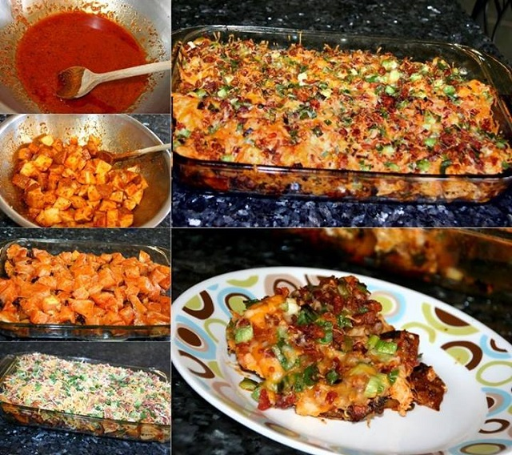

Buffalo Chicken and Roasted Potato Casserole

Description
Chicken and Roasted Potato Casserole is layered with beffalo seasoned potatoes, chicken, and
topped with
cheese, bacon, and onions. Drizzle it with a little blue cheese to serve. If you're looking for a easy dish to make
to impress your loved ones, this is the cassrole for you:)
This cassrole has is a flavorful this with a hint of spicyness, suited for anyone, so don't worry if you're into
spicy foods!
Ingredients
- Cooking Spray
- 6 tablespoons hot pepper sauce
- 1/3 cup olive oil
- 2 tablespoons garlilc powder
- 1 tablespoons freshly ground black pepper
- 1 tablespoons paprika
- 1 1/2 teaspoons salt
- 8 potatoes, cut into 1/2-inch cubes
- 2 pounds skinless, boneless chicken breast halves, cut into 1/2-inch cubes
- 2 cups shredded Mexican cheese blend such as Great Value Fiesta Blend
- 1 cup crumble cooked bacon
- 1 cup diced green onions
Steps
- Preheat oven to 500 degress F (260 degress C). Spray a 9x13-inch baking dish with cooking spray.
- Heat hot pepper sauce, olive oil, garlic powder, black pepper, paprika, and salt in a large skillet over low
heat, stirring until thoroughly combined. Turn off head. Toss potatoes in batches with the hot pepper sauce
mixture to coat and use a slotted spoon to transfer potatoes to the prepared baking dish. Leave remaining sauce
in skillet. Mix chicken into remaining sauce and allow to marinate while potatoes roast.
- Baked potatoes until tender inside and crisp and brown outside, 45-50 minutes, stirring every 10 to 15 minutes.
- Reduce oven heat to 400 degrees F (205 degress C).
- Spread chicken cubes over roasted potatoes. Sprinkle Mexican cheese blend, cooked bacon, and green onions over
chicken. Return to oven and bake until chicken is cooked through and the cheese topping is bubbling, about 15
minutes.
- Bake in oven until chicken is cooked through and the cheese topping is bubbling, about 15 minutes.
- Last but not least Enjoy:)